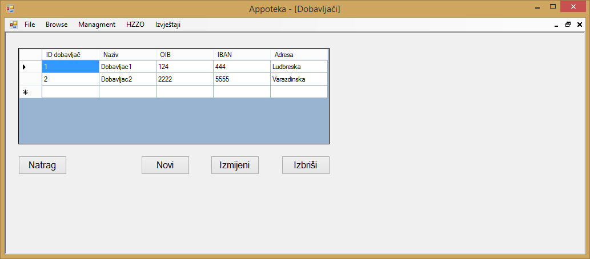
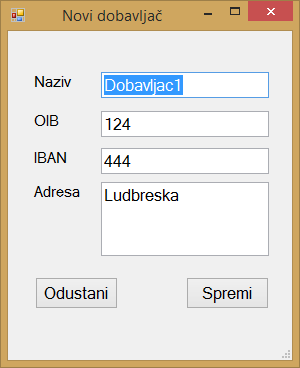

Klikom na gumb "Managment" u glavnom meniju otvara se izbor od četiri stavke, to su "Zaposlenici", "Dobavljači", "Kategorije lijekova" i "Ladice". Klikom na gumb "Dobavljači" otvara se prozor u kojemu se nalazi popis svih dobavljača koji su trenutno uneseni u aplikaciju te su prikazani svi relevantni podaci o tim istim dobavljačima.

Ako korisnik aplikacije želi dodati novog dobavljača u aplikaciju, to može učiniti klikom na gumb "Novi" nakon čega se otvara novi prozor u kojemu je potrebno unijeti sve navedene podatke o dobavljaču.

Nakon što korisnik aplikacije unese sve podatke o dobavljaču, klikom na gumb "Spremi" novi dobavljač se dodaje u aplikaciju, te aplikacija porukom javlja kako je novi dobavljač uspješno unesen. Klikom na gumb "Odustani" postupak dodavanja novog dobavljača se poništava.
Ako korisnik aplikacije želi izmijeniti podatke o postojećem dobavljaču, to može učiniti na način da označi željenog dobavljača te klikne na gumb "Izmijeni". Klikom na gumb "Izmijeni" otvara se novi prozor u kojem su prikazani podaci o označenom dobavljaču.

Nakon što je korisnik aplikacije promijenio podatke o odabranom dobavljaču, te podatke može spremiti klikom na gumb "Spremi". Klikom na gumb "Odustani" postupak izmijene označenog dobavljača se poništava.
Ako korisnik aplikacije želi obrisati određenog dobavljača iz aplikacije, to može učiniti na način da označi željenog dobavljača te klikne na gumb "Izbriši", nakon čega aplikacija pokazuje poruku kojom se želi potvrditi odabir korisnika. Klikom na gumb "Yes" označeni dobavljač će se obrisati, dok će se klikom na gumb "No" odustati od brisanja dobavljača.

Klikom na gumb "Natrag" aplikacija korisnika vraća na početni zaslon aplikacije.